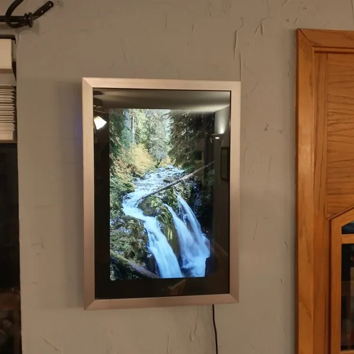

2006 年旧笔记本改数码相框
- 作者拆出旧笔记本主板和屏幕，装入 12×18 英寸相框，用 MX Linux、Feh 和 VNC 自动播放照片。

- 记录 L24
- 资料核查 2026-10-21
- 实机状态 KitAgain 未进行实机测试
- 0/5 个维度有可核验来源
- 现有核查状态只能支持文档与社区维度；其余维度未取证并保留为 null，因不足 3 个有证据维度而暂不评星。
是否值得继续
- 当前阶段 作者拆出旧笔记本主板和屏幕，装入 12×18 英寸相框，用 MX Linux、Feh 和 VNC 自动播放照片。
- 现在能用到什么程度 可以实际播放照片并远程维护，但高频噪声可能使成品不可接受。
- 用户价值 完整记录了成功功能和一个没有美化的真实缺陷。
- 继续跟进建议 先整机测试噪声、温度和自动恢复；通过后再拆装进框。
适用设备与限制
已知可参考或可继续核查
- 主板和 LCD 仍工作的旧 x86 笔记本
- 能运行轻量 Linux 并从 USB 启动的机器
不能视为已支持
- 对高频噪声敏感的房间
- 裸板无防护的长期墙装
缺口、下一步与风险
- 为什么仍是 E0 功能已完成，但作者记录约 13.5 kHz 啸叫且未解决；长期功耗、散热和墙面防火未测。
- 下一步核验 确认啸叫来源、自动重启、远程维护、温度和待机功耗。
- 风险与停止条件 拆下老化电池，覆盖裸露电路并确保墙面安装散热与阻燃。
链接里分别有什么
- 作者完整制作与故障日志 ↗completed-build-log含 MX Linux、Feh、VNC、结构步骤和未解决的 13.5 kHz 啸叫。https://hackaday.io/project/183641-digital-photo-frame-from-obsolete-laptop